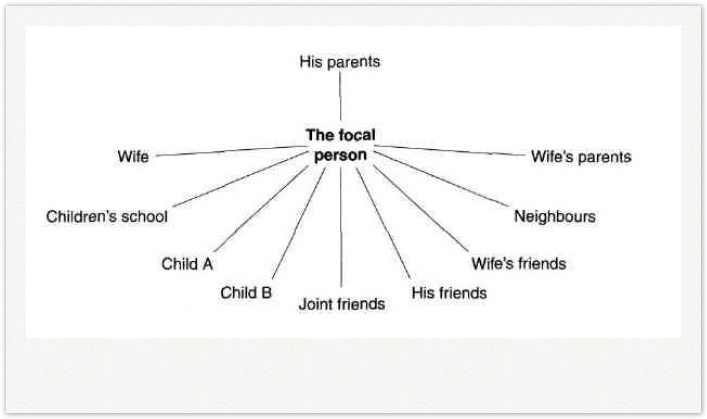

THE CONCEPT OF ROLE THEORY
Any individual in any situation occupies a role in relation to other people. The particular individual with whom one is concerned in the analysis of any situation is usually given the name of focal person. He has the focal role and can be regarded as sitting in the middle of a group of people, with whom he interacts in some way in that situation. This group of people is called his role set. For instance, in the family situation, an individual’s role set might be shown as in Figure 6.

The role set should include all those with whom the individual has more than trivial interactions.
Role definition
The definition of any individual’s role in any situation will be a combination of the role
expectations that the members of the role set have of the focal role. These expectations are
often occupationally denned, sometimes even legally so. The role definitions of lawyers and
doctors are fairly clearly defined both in legal and in cultural terms. The role definitions
of, say, a film star or bank manager, are also fairly clearly defined in cultural terms, too
clearly perhaps. Individuals often find it hard to escape from the role that cultural
traditions have defined for them. Not only with doctors or lawyers is the required role
behavior so constrained that if you are in that role for long it eventually becomes part of
you, part of your personality. Hence, there is some likelihood that all accountants will be
alike or that all blondes are similar – they are forced that way by the expectations of
their role.
It is often important that you make it clear what your particular role is at a given time. The means of doing this are called, rather obviously, role signs. The simplest of role signs is a uniform. The number of stripes on your arm or pips on your shoulder is a very precise role definition which allows you to do certain very prescribed things in certain situations. Imagine yourself questioning a stranger on a dark street at midnight without wearing the role signs of a policeman!
In social circumstances, dress has often been used as a role sign to indicate the nature and degree of formality of any gathering and occasionally the social status of people present. The current trend towards blurring these role signs in dress is probably democratic, but it also makes some people very insecure. Without role signs, who is to know who has what role?
Place is another role sign. Managers often behave very differently outside the office and in it, even to the same person. They use a change of location to indicate a change in role from, say, boss to friend. Indeed, if you wish to change your roles you must find some outward sign that you are doing so or you won’t be permitted to change – the subordinate will continue to hear you as his boss no matter how hard you try to be his friend. In very significant cases of role change, e.g. from a soldier in the ranks to officer, from bachelor to married man, the change of role has to have a very obvious sign, hence rituals. It is interesting to observe, for instance, some decline in the emphasis given to marriage rituals. This could be taken as an indication that there is no longer such a big change in role from single to married person, and therefore no need for a public change in sign.
In organizations, office signs and furniture are often used as role signs. These and other perquisites of status are often frowned upon, but they may serve a purpose as a kind of uniform in a democratic society; roles without signs often lead to confused or differing expectations of the role of the focal person.
Role ambiguity
Role ambiguity results when there is some uncertainty in the minds, either of the focal person or of the members of his role set, as to precisely what his role is at any given time. One of the crucial expectations that shape the role definition is that of the individual, the focal person himself. If his occupation of the role is unclear, or if it differs from that of the others in the role set, there will be a degree of role ambiguity. Is this bad? Not necessarily, for the ability to shape one’s own role is one of the freedoms that many people desire, but the ambiguity may lead to role stress which will be discussed later on. The virtue of job descriptions is that they lessen this role ambiguity.
Unfortunately, job descriptions are seldom complete role definitions, except at the lower end of the scale. At middle and higher management levels, they are often a list of formal jobs and duties that say little about the more subtle and informal expectations of the role. The result is therefore to give the individual an uncomfortable feeling that there are things left unsaid, i.e. to heighten the sense of role ambiguity.
Looking at role ambiguity from the other side, from the point of view of the members of the role set, lack of clarity in the role of the focal person can cause insecurity, lack of confidence, irritation and even anger among members of his role set. One list of the roles of a manager identified the following: executive, planner, policy maker, expert, controller of rewards and punishments, counselor, friend, teacher. If it is not clear, through role signs of one sort or another, which role is currently the operational one, the other party may not react in the appropriate way — we may, in fact, hear quite another message if the focal person speaks to us, for example, as a teacher and we hear her as an executive.
Questions 29-35
Do the following statements reflect the views of the writer in Reading Passage 138?
In boxes 29-35 on your answer sheet write:
YES if the statement reflects the views of the writer
NO if the statement contradicts the views of the writer
NOT GIVEN if it is impossible to know what the writer thinks about
this
29 It would be a good idea to specify the role definitions of soldiers more
clearly.
30 Accountants may be similar to one another because they have the same
type of job.
31 It is probably a good idea to keep dress as a role sign even
nowadays.
32 The decline in emphasis on marriage rituals should be reversed.
33 Today furniture operates as a role sign in the same way as dress has
always done.
34 It is a good idea to remove role ambiguity.
35 Job descriptions eliminate role ambiguity for managers.
Questions 36-39
Choose ONE OR TWO WORDS from Reading Passage 3 for each answer.
Write your answers in boxes 36-39 on your answer sheet.
36 A new headmaster of a school who enlarges his office and puts in
expensive carpeting is using the office as a ………….
37 The graduation ceremony in many universities is an important…………
38 The wig which judges wear in UK courts is a ……….
39 The parents of students in a school are part of the headmaster’s ………….
Question 40
Choose the appropriate letter A-D and write it in
box 40 on your answer sheet.
This text is taken from ….
A a guide for new managers in a company.
B a textbook analysis of behaviour in organisations.
C a critical study of the importance of role signs in modern society.
D a newspaper article about role changes.
Answer:
29 NOT GIVEN
30 YES
31 YES
32 NOT GIVEN
33 YES
34 NO
35 NO
36 role sign
37 ritual
38 role sign
39 role set
40 C